| Lots of activities, not a lot of photos - but
enough to help me remember a good month full of friends and family and
celebrating Jesus. |
|
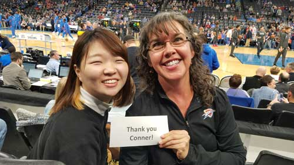 Yuki and I had recently attended a Thunder game together where we were
in the Eric's friend Conner offered us two tickets for a game one night and we
were amazed |
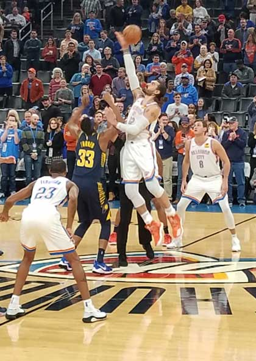 |
| Tip off | |
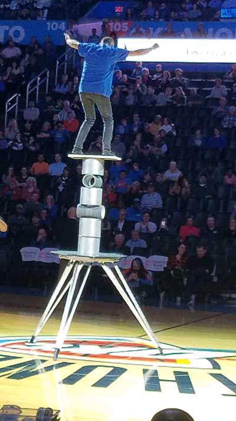 |
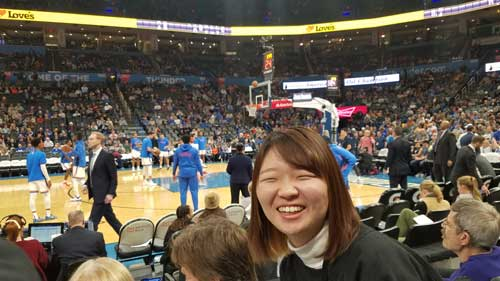 Yuki & the team |
| Half-time show - amazing balancing tricks | |
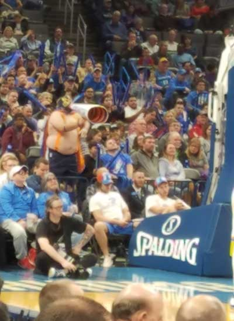 |
This shows Chris Paul to the left, who seems to be a very positive,
professional guy and |
| This guy is fantastic - Thundor. He goes to every home game to taunt the opponents when they get a free throw. There is an article about him here. |
|
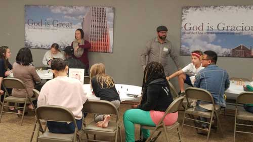 |
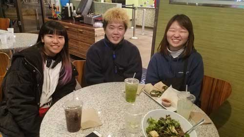 |
| One shot of a Christmas party at the BCM - they had different crafting
stations set up so the kids learned more about the Christmas story while doing an activity. |
Dinner and Christmas light viewing with three Japanese friends |
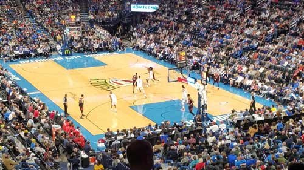 Eric and I enjoyed another Thunder game mid-month, thanks to our
financial advisor. |
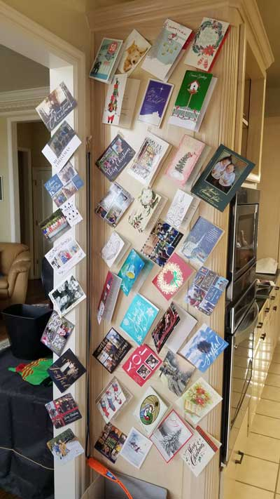 |
| I hang and display all of the Christmas cards I receive. I love
looking at them repeatedly and thinking about the friends I've known over the years. Thank you all for sending your cards, I love them!
|
|
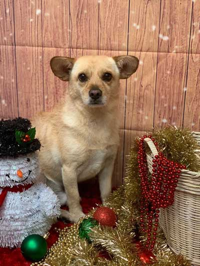 |
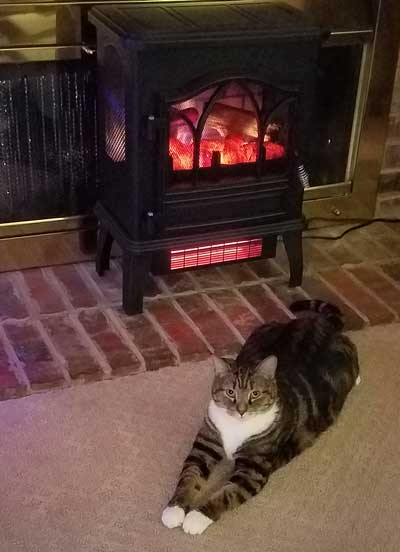 |
| The groomer took this Christmas photo of Buddy for us. I love
the sentiment, but he looks a little distressed - probably hates being so clean. |
Lily LOVES to be warm, whenever we use this heater, she plants herself right in front of the blower and luxuriates in the heat. |
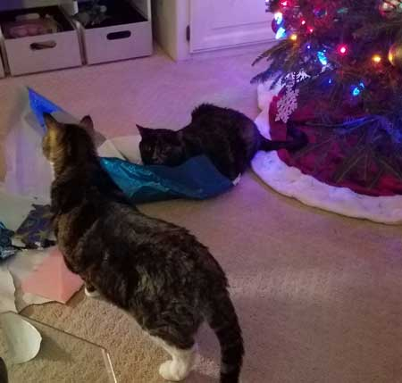 |
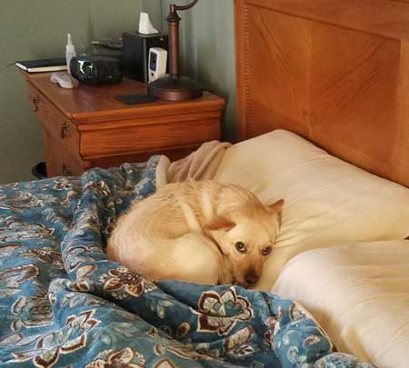 |
| Eric & I opened our Christmas gifts early - the cats think our discarded paper is a gift to them. | Do you think he knows that he is not supposed to be on Eric's pillow? Guilty much? |
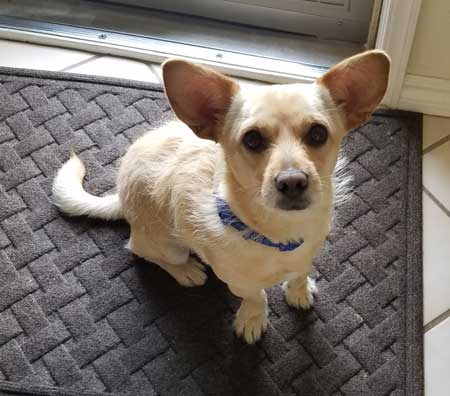 |
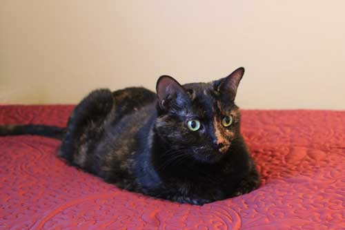 I was trying to make the bed, but this one planted herself right in the
middle. So I |
| This is the face he gives me when he feels he is due for a walk or a fetching session. | |
|
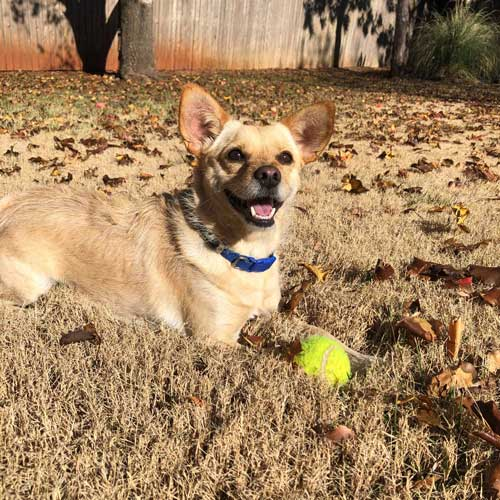 |
My Japanese friend Yuki came over for a visit one day and captured this awesome shot of Buddy in our back yard.
|
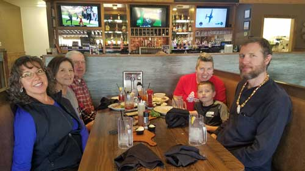 My 50th birthday was on Christmas Eve, so my parents treated the family
to a lovely |
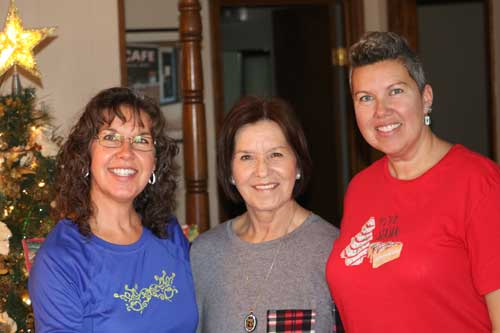 |
| The Morton girls | |
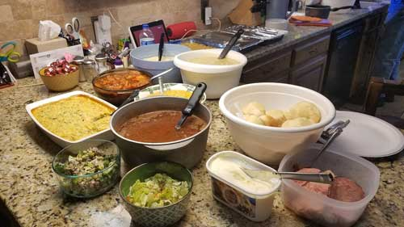 |
|
| The Bloomers spend Christmas Day with Keith's family, so this was the
Christmas lunch my mother prepared for 3 people. Yes, 3 people were expected to eat all this - plus pie! It was excellent as always. Mom is a great cook, I have no idea why I am not. |
We needed to walk after that amazing lunch, so me & my parents headed
over to Cane Hill to do some touristing. |
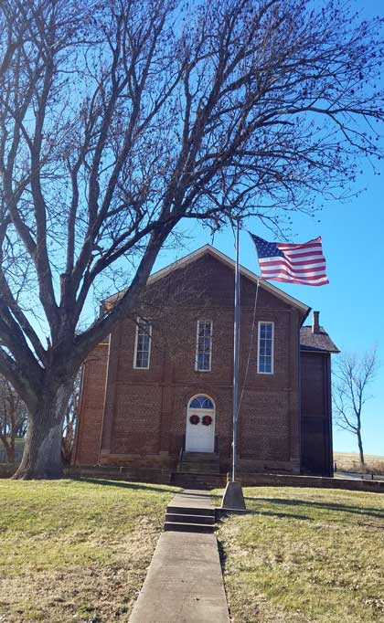 |
Here's the info board on the college's history. This community has a festival each year where they use an old-fashioned
sugar cane mill |
| Cane Hill College - the first college in the state of Arkansas. | |
|
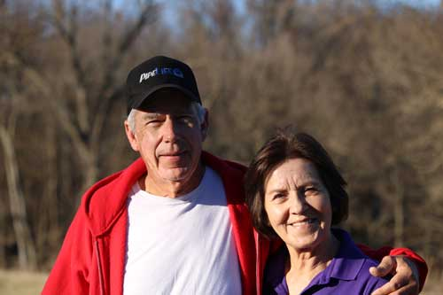 Great photos of Mom & Dad, if I do say so myself. |
|
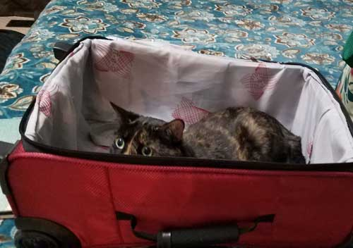 |
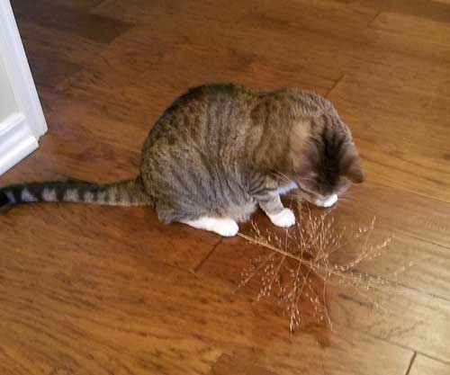 |
| On the 27th, I went back to OKC just in time to unpack one suitcase and pack
a new one for an early-morning flight to Montana. Feisty tried her best to prevent me from packing again. |
Mom & Dad's cat Waldo is passionate about eating the seeds off of these
weeds that grow around their house. They sent a few home to my cats as Christmas gifts and it turns out, my cats enjoy them too. |
|
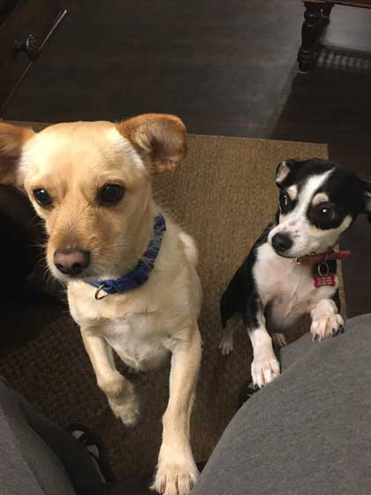 |
When we go out of town from OKC, we have the best pet sitter in the world. It's our friend LaLisa, who was Buddy's foster mom before we adopted him. He is already comfortable with her and her home, |
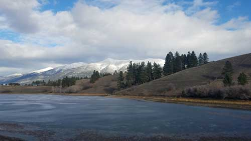 |
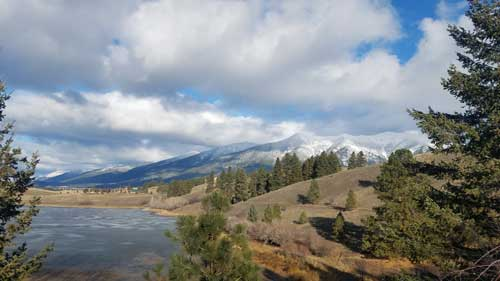 |
| Montana was cold, cloudy, and beautiful. These two photos were taken
on the only walk I managed to take in 10 days. I have to get tougher, and get better cold-weather gear. |
Looking over the frozen lake and the snowy Whitefish mountains. |
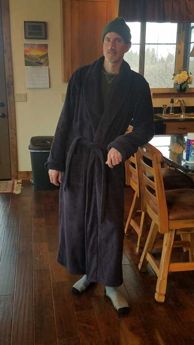 |
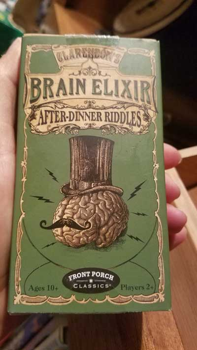 |
| The day I arrived, Eric came down with a bad cold or flu (we never knew) and was sick for the entire 10 days I was there. Thankfully he recovered in time for our return flight. This is his, "I'm sick and about to die" outfit. |
One of the highlights of the trip for me was an evening out with friends where we chatted and also played this fun riddle game. |
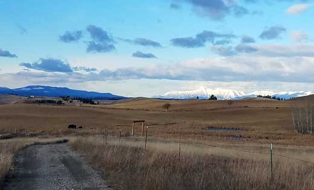 |
|
| As we drive down our driveway away from our house, we look straight at the
Canadian Rockies. I try endlessly to get a photo of how beautiful they look, but it's always just a smudge. So... |
|
|
Keith Taylor to the rescue! Keith is a local photographer who is so good, he almost makes me want
to put my camera away forever in shame. |
|
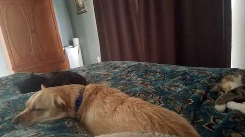 |
|
| Buddy and the cats are not pals, but after we'd been away from home for two
full weeks, none of them were willing to give up the right to sleep with us. |
|